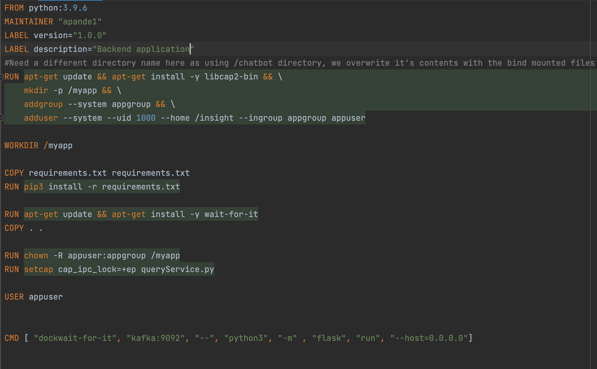

Here's my computer.

When I started working as a software developer, I kept hearing my seniors use the word image in context of deploying the microservices they owned. I could not fathom what they meant by it in this context. And that was my first stupid question to them. What do you mean by 'the correct image is not getting deployed due to some reason?' That was my introduction to docker and images and containers in my development journey.
Think of how developers earlier used to deploy their code. Speaking in terms of Java, they would run mvn clean install and generate a war/jar file. They would then take this jar file and deploy it in the production server. Now imagine a very stupid hypothetical scenario where when you wrote the code in your machine you used some environment configuration, say, for example, Java 17 for the compilation of your code. In production, they sadly use Java 8. What will happen? Your code will not compile and run properly. Now imagine 20 other different configurations that are not similar in these two environments. This will lead to a headache for the developer to make sure these configurations match. Enter docker. Now instead of telling your customer here's my war file and here's the exact configurations you need to use to make it run, you tell them, "Here's my computer where the code successfully ran." Seems weird but that is what Docker is capable of.
Docker is based on the idea of images, a snapshot of the system with the correct configurations and files and environment variables to make your program run. If this image is run on a different machine, on a different OS, it won't make a difference because what you are essentially running is a computer with already defined configurations and files. You took a snapshot of your computer and the code and forwarded this image to someone working on a different machine. Knowing docker is a very essential skill to have because it has become an indispensible tech stack in almost every software environment. It's all about images, base images, containers and managing those containers (Openshift/ Kubernetes).
So we have four very important terms to keep in mind:
Let me explain how Docker manages to achieve all of the above with the dockerfile that I wrote for an application I was working on. Dockerfile is the first step in working with images and containers.
The first FROM is the base image. It is like building your own computer. The first question you'll have while building your own computer would probably be, "What kind of OS do I need?". Docker provides you with these base images in their repositories which will be the skeleton of your computer that you are trying to create. In my case, I wanted to work with python:3.9 and this is one of the images that is provided.
The next important command is the RUN command. This is like spicing up your computer. You wanted Windows as your OS but now you want to install apps on it. The RUN command takes care of that. As most of these base images run on top of some Ubuntu/Debian distributions, I used apt-get to install libcap2-bin on my new computer. Created a directory /myapp, added a group and user to work on that directory. You get the idea.
The command WORKDIR specifies that all the subsequent commands that will be used in this dockerfile will run on the directory mentioned in this step. This will be like the home directory for your app.
The COPY command has the syntax "COPY source target". So whatever file you want to copy from your local machine into the container will be specified here. In my case, the requirements.txt file that is being used in the flask application will get copied into the container.
The next few steps use RUN to change owner of /myapp, give permission to queryService.py to lock the memory (not important for now, it was needed because I was trying to run a model for text generation and it required memory locking permissions.) and then finally change the user from root to appuser (using USER command).
The last important command is the CMD command. There are generally two ways to specify what you want the container to do when it comes up using this dockerfile. ENTRYPOINT tells the container what process to execute and CMD provides the set of arguments to that process. In my case, you will notice ENTRYPOINT is missing. In such cases, the default /bin/sh -c is executed. The arguments to that will be the ones that I have provided in CMD.
So just with these few commands we were able to set up an image of our application. There are many more commands and ways to bring up containers and use base images from the docker hub using docker-cli and docker compose. But almost all tech companies use dockerfiles to create an image of their application and deploy it on different container management platforms like Elastic Kubernetes Service (EKS, where the control plane is managed by AWS), or self-managed Kubernetes or Openshift (control plane managed by RedHat). This helps in way more efficient CI/CD pipelines and integrated development. So for a developer just starting out, it is a good idea to get a good grasp on Docker and the world of images and containers.